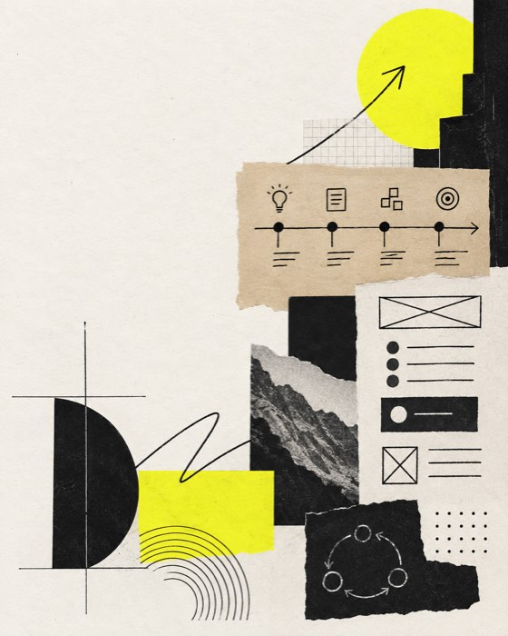

Lenskart | Lenskart@Home
Make home trials easier to choose.
Owned growth across an O2O eyewear experience spanning trial discovery, store ownership, and post-purchase journeys.
Growth and adoption product manager
I turn moments of customer friction into clearer journeys, better decisions, and measurable business outcomes.

The product instinct
I work where high-intent users lose momentum: an abandoned booking, an unclear choice, an unread report, or a post-purchase issue. My approach connects research, analytics, operations, and product delivery.
I care about adoption mechanics that last, not just a launch metric that looks good for a week.
Selected product work
A mix of 0 to 1 business building, growth experiments, and operational product work in complex customer journeys.
Owned growth across an O2O eyewear experience spanning trial discovery, store ownership, and post-purchase journeys.
Built and scaled products across wellness, diagnostics, consultations, insurance, and digital health.
Read case studyA local-first job-search copilot that turns a resume and labelled job alerts into explainable, reviewable application decisions.
See the buildHands-on AI product build
ApplyGuard reflects how I want AI products to work: private by default, transparent about reasoning, and controlled by the person making the decision.
Job seeking creates a messy set of decisions across resumes, alerts, fit signals, and applications. ApplyGuard gives product managers a local-first workflow to collect, rank, and review relevant roles before acting.
The next problem